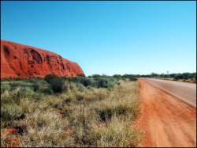

Just a big country town
When I was small, my family lived in the country and my father worked at a bank. Each weekday, he dressed in a short-sleeved shirt, a tie, dress shorts, a belt and long socks. If the weather grew cold, he added a vest. A few years later he was transferred to a city of close to a million people, with the State capital sprawling just an hour away down the highway, and we went with him. I remember asking, “Will there be real traffic jams?” But my new school friends derided my quaint regional vocabulary; I said port when I meant schoolbag, tea when I meant dinner, and togs when I meant swimming costume. And my father put away the long socks and wore only trousers and long sleeves. He even donned a suit in winter.
At some stage in their education, Australian schoolchildren are required to write a composition about what a typical Australian might be. Fortunately for the young essayist, there is a commonwealth of stereotypes there for the critiquing, and they nearly all have the bush as their setting. You know them already: Akubras, Driza-Bone, jackaroos, bushrangers and everything Banjo Patterson rhymed about. This sits uneasily with the more recent truth that Australia is now one of the most urbanized nations in the world. [1] While we exhort international visitors to head to the Outback to see the “real Australia”, one in five of us lives in Sydney. And so the paradox at the heart of any meaningful discussion about Australian identity is that, while nearly all of our well-used images are grounded in the dirt and fields and heat of rural Australia, very few Australians live there.
It used to be different. In 1933, more than a quarter of working Australians were working on the land, engaged in some sort of farm employment. But the Second World War and its aftermath brought industry, jobs and, importantly, immigration to the cities – this figure had halved to an eighth by 1955. Now less than one per cent of the population lives in the Outback [2] and 90 per cent of working Australians live in the cities and major centres. [3] Pundits and television lifestyle programs make much of the recent sea- and tree-change phenomena, in which city workers eschew the rat race and anonymity of the capital cities, trading them for the relative peace and community of small beachside and mountain towns. It’s happening, to be sure, but these parties tend to be neither young nor entrepreneurial; couples nearing the end of their working lives rather than the growing families that bring with them the most meaningful investment for a regional town – the prospect of renewal.
The English writer Anthony Trollope toured Australia in the late 1800s and visited a number of country towns in New South Wales, noting the “look of scattered, straggling incompleteness, and an air of disappointment, as though men were beginning to fear that their Eden was not becoming that city of Elysium which they had fondly anticipated.” (He did, however, note favourably the superior facilities of Australian hotels, almost all of which had a bathroom: “I wish I could convey this information to hotel-keepers in England.”) [4] Fast forward a hundred years and a bit: farmers are in the midst of the worst drought in over a century, banks and building societies are closing and specialist medical services are moving away. In the country, it’s harder to open a bank account and it’s harder to have a baby. Some towns have rediscovered their niche – there are markets for heritage tourism, wineries and smaller-scale agriculture that didn’t exist fifty years ago – and are thriving. Others struggle.
I fear that I have painted something rather grim. But take heart: it rained this Christmas and commodities are booming. And it is also true that, despite any earnest advertising campaigns to the contrary, the fondest insult an Australian can direct at their capital city (State, Territory or Commonwealth) is that “it’s just a big country town”. They mean it’s somewhere friendly, where you can bump into people you know and where you are greeted in the summer with, “Hot enough for ya?” And I’m glad that I was born in a little town where there are never any traffic jams and where the men wore shorts and long socks. I come from a place and it’s mine and it’s Australia.
Deborah Evans was born in Gympie, Queensland, Australia (pop. 33,000).
Footnotes
[1] “Urbanization”, Wikipedia, accessed 22 December 2006.
[2] D. Woodward, “The National Party”, in D. Woodward, A. Parkin, J. Summers (eds), Government, Politics, Power and Policy in Australia, Longman, South Melbourne, 1999, p. 190.
[3] Australian Bureau of Statistics, Characteristics of Wage and Salary Earners in Regions of Australia, 2002–03, Cat. No. 6261.0.55.001, accessed 22 December 2006.
[4] A. Trollope, “Country Towns, Railways and Roads”, in P. D. Edwards and R. B. Joyce (eds), Australia, University of Queensland Press, St Lucia, 1967, pp. 262–263.